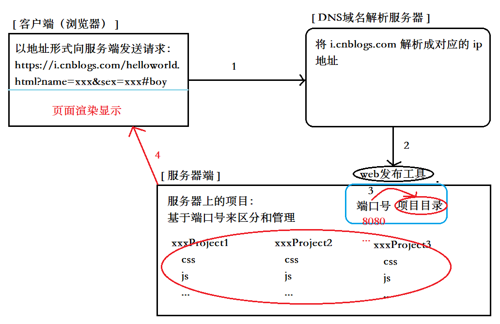

知识不怕旧，关键在于在旧知识的基础上不断创新与提高！
引入一个问题：打开一个浏览器，在地址栏输入一个网址，按下 enter 键到看到整个页面，中间都经历了哪些事情?
这是一个前端的面试题，相信很多朋友都知道，知道了解的朋友可以略过这一块。
1、HTTP请求阶段：向服务器发送请求
浏览器首先向DNS域名解析服务器发送请求，DNS域名解析服务器对该地址进行解析，根据浏览器请求地址中的域名，到DNS服务器中找到对应的服务器外网IP地址，进而通过找到的外网IP，向对应的服务器发送请求，通过URL地址中携带的端口号，找到服务器上对应的服务，以及服务所管理的项目源文件；
2、HTTP响应阶段：服务器把客户端需要的内容准备好，并且返回给客户端
服务器端根据请求地址中的路径名称、问号传参或者哈希值，把客户端需要的内容进行准备和处理，把准备的内容响应给客户端；
注意：如果请求的是HTML或者CSS等这样的资源文件，服务器返回的是资源文件中的源代码
3、浏览器渲染阶段
客户端浏览器接受到服务器返回的源代码，基于自己内部的渲染引擎（内核）开始进行页面的绘制和渲染。

URL，在上诉中一个很重要的媒介：https://i.cnblogs.com/helloworld.html?name=xxx&sex=xxx#boy，我们再来认识认识这个东西是什么？
1、URL / URN / URI
URI = URL + URN
URI：统一资源标识符
URL：统一资源定位符
URN：统一资源名称
2、传输协议（http）：用来传输客户端和服务器端交互的信息（这是个很重要的东西）
HTTP：超文本传输协议（除了传递普通的文本，还可以传递文件流或者进制编码等信息），是目前最常用的WEB传输协议
HTTPS：基于SSL（Secure Sockets Layer 安全套接层）加密的HTTP传输协议，比HTTP更加的安全
扩展：FTP：文件传输协议，一般用来实现资源文件在服务器上的上传下载
3、域名：i.cnblogs.com
这个没什么好说的，基本就是为了语义化，好记
4、端口号（8080）：用来区分同一台服务器上不同服务的标识
HTTP => 默认端口号 80
HTTPS => 默认端口号 443
FTP => 默认端口号 21
端口号范围：0~65535之间
5、请求路径名称：/helloworld.html
（1）有后缀信息：/helloworld.html
一般都是请求当前服务对应的项目目录中，helloworld.html页面
（2）无后缀信息：/helloworld
一般都不是用来请求资源文件的，而是用于AJAX数据请求的接口地址
6、问号传参及哈希值：?name=xxx&sex=xxx#boy
在HTTP事务中，问号传参是客户端把信息传递给服务器的一种方式(也有可能是跳转到某一个页面，把参数值传递给页面用来标识的)
哈希值一般都跟客户端服务器交互没啥关系，主要用于页面中的锚点定位和HASH路由切换
看了这么多是不是觉得啰嗦了呢，别急，正题这不就来了吗！
AJAX ：async javascript and xml 异步的 JS 和 XML
1、操作
1 // 创建AJAX实例：IE6中是不兼容的（忽略这万恶的）
2 let xhr = new XMLHttpRequest();
3
4 // 打开请求：发送请求之前的一些配置项
5 // 1.HTTP METHOD 请求方式
6 // GET/DELETE/HEAD/OPTIONS/TRACE/CONNECT/POST/PUT
7 // 2.URL 向服务器端发送请求的API
8 // 3.ASYNC 设置AJAX请求的同步异步，默认是异步（写TRUE也是异步），FALSE是同步，一般都使用异步编程，防止阻塞后续代码执行
9 // 4.USER-NAME/USER-PASS：用户名密码，一般不用
10 xhr.open([HTTP METHOD],[URL],[ASYNC],[USER-NAME],[USER-PASS]);
11
12 // 事件监听：一般监听的都是 READY-STATE-CHANGE 事件（AJAX状态改变事件），基于这个事件可以获取服务器返回的响应头响应主体内容
13 xhr.onreadystatechange=()=>{
14 if(xhr.readyState===4 && xhr.status===200){
15 xhr.responseText;
16 }
17 };
18
19 // 发送AJAX请求：从这步开始，当前AJAX任务开始，如果AJAX是同步的，后续代码不会执行，要等到AJAX状态成功后在执行，反之异步不会
20 xhr.send([请求主体内容]);2、HTTP请求方式
所有的请求都可以给服务器端传递内容，也都可以从服务器端获取内容
GET：从服务器端获取数据(给少拿多)
POST：向服务器端推送数据(给多拿少)
DELETE：删除服务器端的某些内容（一般是删除一些文件）
PUT：向服务器上存放一些内容（一般也是存放文件）
HEAD：只想获取服务器返回的响应头信息，不要响应主体中的内容
OPTIONS：一般使用它向服务器发送一个探测性请求，如果服务器端返回的信息了，说明当前 > 客户端和服务器端建立了连接，我们可以继续执行其它请求了
3、GET VS POST（重点嘛）
（1）传递给服务器信息的方式不一样
1 // GET是基于URL地址“问号传参”的方式把信息传递给服务器
2 xhr.open('GET','/haha/list?xxx=xxx&xxx=xxx')
3
4 // POST是基于“请求主体”把信息传递给服务器
5 xhr.send('xxx=xxx&xxx=xxx')（2）GET不安全，POST相对安全
（3）GET会产生不可控制的缓存,POST不会
4、AJAX状态
- 0 ：刚开始创建XHR，还没有发送
- 1 ：已经执行了OPEN这个操作
- 2 ：已经发送AJAX请求（AJAX任务开始），响应头信息已经被客户端接收了（响应头中包含了：服务器的时间、返回的HTTP状态码...）
- 3 ：响应主体内容正在返回
- 4 ：响应主体内容已经被客户端接收
5、HTTP网络状态码
根据状态码能够清楚的反映出当前交互的结果及原因
- 200 OK 成功(只能证明服务器成功返回信息了，但是信息不一定是你业务需要的)
- 301 Moved Permanently 永久转移（永久重定向）
- 302 Move temporarily 临时转移（临时重定向 =>307）
- 304 Not Modified 设置缓存
- 400 Bad Request 请求参数错误
- 401 Unauthorized 无权限访问
- 404 Not Found 找不到资源(地址不存在)
- 413 Request Entity Too Large 和服务器交互的内容资源超过服务器最大限制
- 500 Internal Server Error 未知的服务器错误
- 503 Service Unavailable 服务器超负荷
6、XHR的属性和方法
- xhr.response 响应主体内容
- xhr.responseText 响应主体的内容是字符串（JSON或者XML格式字符串都可以）
- xhr.responseXML 响应主体的内容是XML文档
- xhr.status 返回的HTTP状态码
- xhr.statusText 状态码的描述
- xhr.timeout 设置请求超时的时间
- xhr.withCredentials 是否允许跨域（FALSE）
- xhr.abort() 强制中断AJAX请求
- xhr.getAllResponseHeaders() 获取所有响应头信息
- xhr.getResponseHeader([key]) 获取KEY对应的响应头信息
- xhr.open() 打开URL请求
- xhr.overrideMimeType() 重写MIME类型
- xhr.send() 发送AJAX请求
- xhr.setRequestHeader() 设置请求头
后面就是让我们动动自己的小手，实现你自己代码吧！